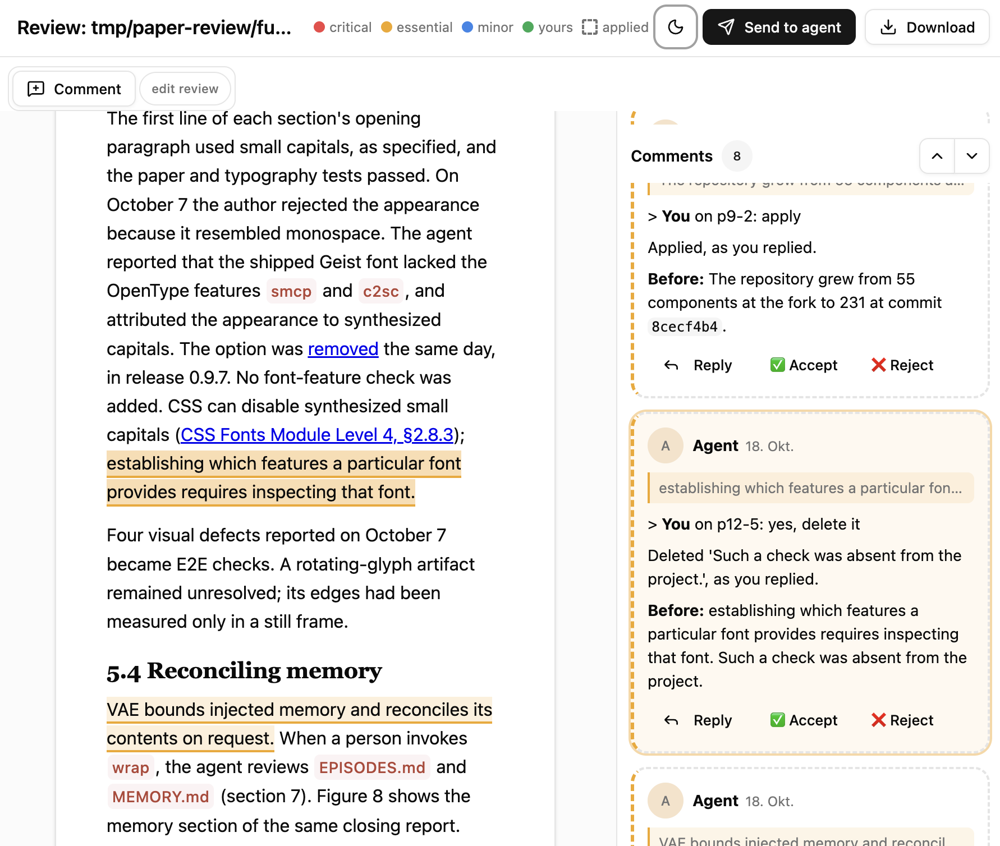
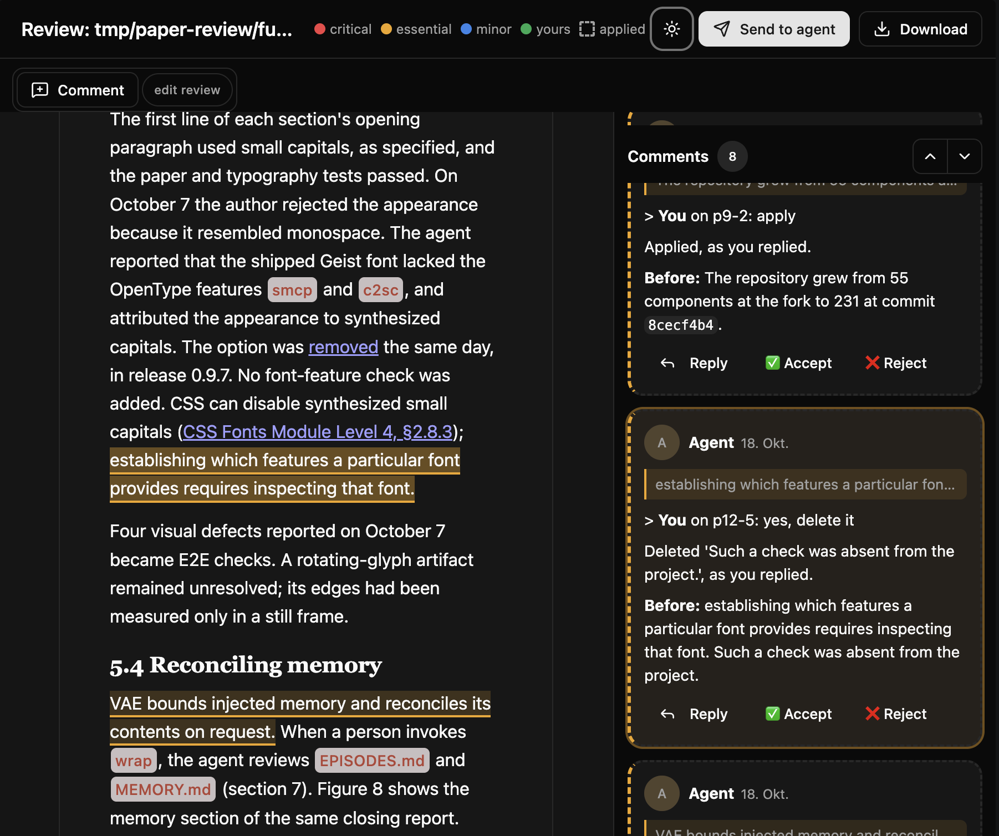

Make your agents STOP the SLOP!
A superset of any natural language Reduce tokens & hallucinations Build quality gates - w/o AI Slop fixed once - never returns Repo-wide changes - now consistent For Claude Code, Codex & more
A failed deterministic check becomes the agent's next task.
defuss-vae turns your engineering standards into executable, deterministic checks. It gates commits not only on tests, but on verification, review and docs - then turn any lessons learned into new deterministic verifier gates that protect any future change from reintroducing known SLOP. Over time, the sieve becomes denser. Eventually almost no AI SLOP can slip through unnoticed - and we didn't pay for any extra token per verifier program check.
- MIT licensed (commercially usable)
- Compatible with any techset
The Definition of Verified (DoV)
Illustrative run"Done" meets your checks.
A debug marker is still in the code. The gate names the file and returns the next action.
REMAINS: hygiene.probes
AGENT_CMD: FIX hygiene.probes:
component.ts:2- Verify failed
- Review pending
- Docs pending
The agent fixes. The gate checks.
The marker is removed and verification passes. Review and docs still need to cover this code.
Verify: passed
Review: current change pending
Docs: current change pending- Verify passed
- Review pending
- Docs pending
Green for this exact change.
Checks pass; review and docs are recorded. Another edit changes the fingerprint and restarts the gate.
Verify: passed
Review: recorded for this code
Docs: recorded for this code- Verify passed
- Review recorded
- Docs recorded
Next: codify the lesson. Let every later gate check it.
Standards that hold
The commit hook checks the current code fingerprint. Verification, review and docs must cover that change; any edit restarts the gate.
A failure means more work
A failed or crashing gate holds the commit. The Stop hook returns unfinished work to the agent once per turn. Plain Python, standard library only.
Your checks, your toolchain
Keep your Makefile verbs, tests and build tools. Add repository-specific rules in .vae/VERIFY.py; stack defaults fill the gaps.
Make the next task better
Turn a correction into a test or verifier rule that every later gate runs. Keep a short memory line only when a program cannot check the lesson.
Give docs the same discipline
Documentation gets a static prose check and a part-by-part review against a 61-rule catalog. You answer the findings on a review page; the next revision changes only what you asked for.
You stay in charge
Let the agent handle the work. Review risky plans, invoke wrap when ready, and decide what gets pushed or released.
Explain your intention
Let your agents build
Establish verifiable quality gates
Review only what matters
Past mistakes become present quality gates
What's left is excellent agentic code
VAE traps probabilistic AI agents in a deterministic, self-improving quality enforcement loop until all AI output is verified to be coherent.
...what's missed by the agent today, is reviewed and detected once by a human. It is not learned in memory, but becomes a program that traps the agent next time, when it repeats the same mistake. It tells it exactly what was missed and how to fix it.
In the first loop the agent calls make build to produce a result, but make build depends on make verify. The verifier program is called and checks the AI's output. If something is off, it writes exact instructions into stdout. The agent is instructed that these instructions are authoritative. It faithfully executes them and addresses any slop if otherwise would have overlooked. Whatever new slop remains, is covered by a single human review - as any slop mistake detected becomes a new verifier gate and thus cannot return; in defuss-vae, long-term memory, episodic memory and AGENTS.md instructions only hold what no program can deterministically check.
- your make verbs
- goal
- load
- remaining
- next call
- green
- outcomes
- leads
- codify
- every gate runs it
- else one line
- next session
Scroll the diagram sideways to see the whole loop.
What the agent reads
The gate's output is plain text the harness hands to the model's next call: which checks passed, which remain, and the command that fixes each one. The gate's checks, selecting the next part of a page and formatting the output make no model call; in a page review, only the second opinion and the optional typed-decision check do.
The output lines are captured verbatim from defuss-vae 0.8.0 on a small fixture, as printed in the paper's Figure 2: a temporary probe marker on line 2 fails the built-in hygiene rule, and the same check passes once the agent removes it.
python3 vae.py gate --repo .VERIFIED[hygiene.probes]=false BC glob='*' files=1; hits=['component.ts:2']PROVEN: ∅REMAINS: hygiene.probesAGENT_CMD: FIX hygiene.probes: component.ts:2the agent removes the marker and calls the gate againpython3 vae.py gate --repo .VERIFIED[hygiene.probes]=true BC glob='*' files=1PROVEN: hygiene.probesREMAINS: ∅AGENT_CMD: ∅Lessons become new AGENTS.md instructions and code, not just memory
defuss-vae gives agents memory, and every session starts with it. The long-term memory, .vae/MEMORY.md, holds one line per durable fact with its reason, 4 KiB at most, and is injected whole. The episodic memory, .vae/EPISODES.md, records what the gate saw and what agents learned. It stays bounded: past 100 entries the gate trims its own oldest records, doctor fails above 30 open leads, and only the three newest open entries are injected. vae.py init also writes a managed block of rules into the project's own AGENTS.md, so a harness without hooks gets the same rules.
- else one line
- 3 newest open
Memory is not the primary mode, though. A lesson the agent only remembers depends on the next session reading it and acting on it. A lesson codified into the verifier, a deterministic program, is checked by every later gate, in every session, whatever the agent remembers. So wrap promotes each lesson to the strongest form that fits: a test or a .vae/VERIFY.py rule first, a memory line only when no program can check it, and it deletes the written lesson once a check enforces it.
When no pattern can express a lesson, because it needs parsing, several files or a running program, it becomes a small Python check in .vae/checks/. It uses the standard library only, so there is nothing to install, and when it fails it exits non-zero and prints what to fix. A command rule makes every gate run it.
The paper records this in its study: one human correction (the rendered API pages lacked each state's configuration) became an end-to-end audit of all 59 component pages, so later work checks that requirement without the original exchange (section 5.1). Over the study the verifier grew from 33 to 87 checks, while MEMORY.md held eight entries in 2,311 bytes from October 6 to the end (sections 2.4 and 4.1).
- Test or
VERIFY.pyruleA program: every later gate runs it, and its failure tells the agent what to fix. MEMORY.mdlineOne line with its reason, loaded at every session start: at most 240 characters, 4 KiB in all.EPISODES.mdentryA lead the gate logs;wrappromotes it to a rung above or deletes it with evidence.
a pattern rule (shortened) and a custom checkRULES = [{ "id": "tests.no-mocks", "kind": "not_regex", "glob": "*", "pattern": r"unittest\.mock|MagicMock\(|…", "claim": "tests exercise real subsystems, not mock frameworks",}, { "id": "api-states", "kind": "command", "command": "python3 .vae/checks/api-states.py", "claim": "every API page documents each state's config",}]an example; standard library only, nothing to installimport json, pathlib, sysmissing = [f"{p.name}: {s['name']} lacks its config" for p in pathlib.Path("docs/api").glob("*.json") for s in json.loads(p.read_text())["states"] if "config" not in s]print("\n".join(missing) or "every state documents its config")sys.exit(1 if missing else 0)Agent autonomy. Human control.
Nine skills, one gate the hooks enforce, and two steps no program takes for you. Skill names show the skills-CLI form; the Claude Code plugin namespaces them (/defuss-vae:plan) and Codex writes $plan.
Hook · plugin
Runs by itself. SessionStart loads rules and memory; the Stop hook runs the same gate the agent loops in-turn and blocks once per turn; PreToolUse denies git commit until that gate is green for the current code.
Skill
A slash command with its own procedure. You can start any of them; the agent starts all but wrap when their condition holds.
Manual
Your call. You read the commits and decide what is pushed, tagged and released.
| Stage | Kind | Who drives it | Affected | What it does |
|---|---|---|---|---|
| /plan | Skill | you; the agent only for a risky task you gave no plan for | Plans | Traces the real code path, probes unknowns instead of guessing and writes the smallest plan, in which every acceptance criterion is an executable check, to plans/. A plan the agent started waits for your review. |
| /implement | Skill | you or the agent, fully agentic | Code & testsVerifier gates | Understands first, fixes the root cause and its sibling callers, writes the minimum code, adds tests against real subsystems and loops the gate in-turn. |
| /verify | Skill | the agent at a goal or milestone; you any time | Code & testsVerifier gatesLong-term memory | Reviews against requirements, callers and tests, and fixes the defects it confirms: the whole change when it is large, otherwise its paths and tests. |
| gate | Hook | hooks, automatic | Verifier gatesEpisodic memory | verify runs the project's own make verbs; review checks requirements, every changed path and its callers; docs records why this design beats the plausible alternative. Doc pages get the prose check and catalog review instead of the test suites. |
| /doc | Skill | you any time; the agent after implementing | DocsVerifier gates | Writes and checks documentation pages: claims grounded in code and tests, Mermaid where the content is schematic, then the static prose check, an anchored review of each page against every catalog rule and a review page for you. |
| /doc-edit | Skill | you any time; the agent after doc |
Docs | Edits the named pages as instructed with the same grounding, then reviews each one part by part: findings tied to exact quotes and checked by code, a second opinion from your model where the agent is unsure, a review page for your replies. Its next revision changes only what you asked for. |
| /wrap | Skill | only you, since it commits | CommitsVerifier gatesLong-term memoryEpisodic memoryAGENTS.md | Splits the work into coherent Conventional Commits, updates CHANGELOG.md and codifies what the work taught into the verifier as tests or VERIFY.py rules; only a lesson no program can check becomes a concise memory line with its reason. Then it audits agent memory against the current code. |
| /status | Skill | you or the agent, any time | Sub-agents | Shows what runs (sub-agents, the service, free disk, RAM and GPU), reconciles the sub-agent registry with the process table and names the next step per agent. |
| /optimize | Skill | you; the agent when verification cost is the task or dominates the session budget | Plans | Measures what each verifier, gate and check costs and what it reads and catches, then writes a plan to plans/ that skips, caches or defers a check only where evidence shows the change cannot reach it. The plan waits for your review. |
| /research | Skill | you; the agent when you ask for deep research, and for single lookups when a claim needs a source | Research reports | Researches a question on the project's own LLM endpoint, grounded through its MCP servers, CloakBrowser, a typed-decision endpoint and python3 experiments, and writes a report with its sources to tmp/vae/research/. Each capability, such as web search or paper search, falls through to its next provider when one fails. |
| human review | Manual | you | Commits | You read the commits. Nothing has been pushed yet. |
| release | Manual | you, via CI/CD | RemoteCI | Push, tag, publish to package managers. On GitHub, init adds a workflow that runs the same make setup and make verify, so CI repeats the gate's verify step. |
Zero tolerance for SLOP docs
The documentation skills /doc and /doc-edit review a page part by part against the prose catalog. When they finish, they open a local web editor that shows the page with the agent's findings as comments on their text.
A slop check on every page. A deterministic check scans every changed page for the marks of unreviewed AI text: arrows and check marks standing in for words, em dashes, curly quotes and invisible characters. It fixes what a plain swap can fix, returns the rest to the agent to rewrite in words, and the gate holds the commit until every page passes.
There you review as in a shared document: edit the text, reply to a comment, accept or reject it with one click, or add your own. A dashed comment marks a change the agent already made, and it stays unless you answer it. "Send to agent" hands your answers back.
When you say "done", the agent revises the page only where you asked. A check compares every changed word with your answers and refuses a change nobody asked for. The agent then serves the next revision for your review, with its open questions as comments on the page instead of in chat.
- review page
- done
- next revision
- comments
- answers


Better specs with deep research
A good spec rests on facts, not guesses. The /plan skill grounds every step in the code it changes, and the /research skill answers the questions the repository cannot.
/plan
Reads the code a task touches, traces its data from entry point to output and probes each open runtime question before it writes a step. Every step names the symbol it changes and the test or verifier rule that will prove it. The plan waits in plans/ for your review.
/research
Fetches a source for a single claim, or runs a deep research job in the background. The job reasons on the project's own model endpoint, so its tokens stay out of your agent's context, and it ends with an answer, its probability of being correct and every source it used.
- MCP servers
- CloakBrowser
- python3
- closed
- confident
- open
- unsure
- compared
- calls
- requests
Scroll the diagram sideways to see the whole run.
Capabilities cover web search, web pages, PDFs and office files, peer-reviewed papers, images, video and GitHub repositories. Each one lists its providers in order, such as an MCP server, CloakBrowser or a model that reads attachments, and a failing provider hands the call to the next. Every tool result is logged with its provider, and the report cites only those.
Non-collision agent swarming
Parallel agents save time only when they cannot overwrite each other's work. defuss-vae coordinates them through one registry file and the process table, so it works with any agent harness.
- src/parser
- tests/parser
- src/api
- docs/
- spawn
- overlaps parser
- checks
- merge
Scroll the diagram sideways to see every agent.
Work splits only into units with disjoint target paths and an explicit contract between them; anything else stays sequential. Each unit gets its own git worktree, so no two agents edit the same checkout.
The paths in the example are the target project's own, and nothing about them is set up in advance: the orchestrating agent claims each unit's folders and files from its plan when it spawns the agent, even files the agent has yet to create, and defuss-vae writes every claim into that project's .vae/SWARM_STATUS.yaml on the spot.
vae.py swarm spawn starts any agent CLI or script in its own session, whether Claude Code, Codex or a plain shell job, so a dropped SSH connection cannot kill it. It refuses a claim that overlaps a live agent's folders or files, or that needs more disk, RAM or GPU memory than is free.
The registry lists every live agent with its goal, its folders and its process. Only that agent may change its entry. status checks each entry against the process table and flags an agent that is lost, stalled or overdue, and the orchestrator checks back on a timer instead of trusting silence.
vae.py swarm spawn --name parser --eta 40 \ --workdir ../app.wt/parser \ --targets src/parser,tests/parser \ --goal "Port the parser." -- claude -p "…"VERIFIED[swarm.spawn]=true BC parser: pid=83408 log=var/log/swarm/parser.logvae.py swarm spawn --name lexer --eta 20 \ --workdir ../app.wt/api \ --targets src/parser/lexer.ts \ --goal "Rewrite the lexer." -- codex exec "…"VERIFIED[swarm.spawn]=false BC lexer: CONFLICT parser: target src/parser/lexer.ts (hard rule: disjoint workdirs and target paths)vae.py swarm statusRESOURCES disk_free=19.2G ram_free=4.3G/24.0G cpus=10 load1=8.18 gpu_free=∅ | live claims ram=2.0G disk=0B vram=0BRUNNING parser pid=83408 eta 40m workdir=../app.wt/parser targets=src/parser,tests/parser| Alternative | What goes wrong | defuss-vae instead |
|---|---|---|
| Agents share one checkout | Edits collide, and a test run measures another agent's unfinished work. | One git worktree per unit, outside the repository. |
| Conflicts settle at merge time | Two agents change the same files, and the clash shows only after both finish. | spawn refuses an overlapping claim before any work starts. |
| Coordination inside one harness | It sees only that harness's agents, and a job started from a dying shell dies with it. | A registry file and the process table: any agent CLI or script, each in its own session. |
| A watcher daemon or crontab | It changes system state, and a power-off ends the agents anyway. | The orchestrator's own timer runs status, which judges every entry from the process table. |
Built on the standards of giants
Every defuss-vae project answers to the same verbs and keeps its logs, process files and config in the same places. Humans, agents and CI find their way around without learning each project first.
Every program writes to a place you can predict, the way the Filesystem Hierarchy Standard (opens in a new tab) lays out a Linux system. A service started with make start logs to var/log/<name>.stdout and .stderr and keeps its pid in tmp/<name>.pid. A sub-agent or long job logs to var/log/swarm/<name>.log with a timestamp on every line, and each gate check to var/log/vae/<check>.log, with earlier runs archived. Programs read input/ and write output/.
One Makefile for GNU Make (opens in a new tab) is the interface, the same in every stack: setup, start, stop, restart, status, log, metrics, bench, test, coverage, lint, e2e and verify. make lists them with their usage, and CI runs the same make verify as the gate.
Services behave like Linux system services. make start runs one detached in its own process group, and make stop stops the whole group, gracefully first. make status answers with the exit codes of LSB init scripts (opens in a new tab), so any tool that reads them knows whether the service runs.
Config comes from the environment, as the Twelve-Factor App (opens in a new tab) asks: a gitignored .env reaches every recipe and the app, and a committed .env.example lists every key; the gate fails when one is missing. Tool versions are pinned with mise (opens in a new tab), so make setup rebuilds the toolchain on a fresh clone. Long jobs run detached through vae.py swarm spawn, so a dropped connection or a closed terminal cannot stop them.
app/├── Makefile setup … verify├── .env config, gitignored├── .env.example every key, committed├── mise.toml pinned tool versions├── input/ output/ what programs read, write├── tmp/app.pid the running service├── var/log/│ ├── app.stdout make start│ ├── app.stderr│ ├── swarm/parser.log vae.py swarm spawn│ └── vae/│ ├── tests.unit.log one log per gate check│ └── archive/ earlier runs, gzipped└── .vae/ VERIFY.py · MEMORY.md · EPISODES.mdLSB codes: 0 running, 1 dead (stale pid), 3 stoppedmake status; echo $?running pid=482110Fewer tokens. Exactly one meaning.
VAE-DIALECT adds a small set of operators and three evidence tags to whatever natural language you use with your agents; everything else stays ordinary prose. It is the binding contract in every agent harness and between agents: the skills are written in it, and agents report in it.
Each operator has exactly one meaning. WHEN means equivalence, not "when this, then that", and a word is uppercase only when it is an operator; a test rejects any other uppercase word in a skill. So a compact line expands back into exactly one sentence, and a reader cannot take a sequence for a condition or a guess for a fact.
Before an agent writes a compressed line, it expands it in its head. If the expansion is not unique, or a nuance would get lost, it writes the longer form: compression never outranks correctness. Code, commands, paths and quotations are never compressed.
The saving is enforced, not hoped for: tests cap each skill at 6 KiB and all nine at 40,000 bytes, so the evidence loop, the layout rules and the gate loop have to pay for themselves in compression.
VERIFIED[tests] BC `make test` → 142/142 passHYPOTHESIS[race] BC shared mutable cache; falsifier=`make test T=cache -count=50`UNKNOWN[e2e] BC browser harness unavailableIF HYPOTHESIS[race] THEN next=probe cache writer ELSE next=bisect| Notation | Meaning | Example |
|---|---|---|
VERIFIED[x] |
Established by direct evidence: code, command output, a test, a measurement. | VERIFIED[tests] BC `make test` → 142/142 pass |
HYPOTHESIS[x] |
A testable inference, with the cheapest test that would refute it. | HYPOTHESIS[race] BC shared mutable cache; falsifier=`make test T=cache -count=50` |
UNKNOWN[x] |
Not established yet; names the missing evidence. | UNKNOWN[e2e] BC browser harness unavailable |
BC |
Because: the evidence or reason for the claim before it. | VERIFIED[gate] BC `make verify` → pass |
IF … THEN … ELSE |
A condition; ELSE belongs to the nearest IF. | IF HYPOTHESIS[race] THEN next=probe cache writer ELSE next=bisect |
NOT · AND · OR |
Logic, written out so it cannot be misread. | NOT mocks AND NOT live data |
A → B |
A sequence or an observed result. A ladder tries each rung in order and stops at the first that holds. | read → existing test → probe → ask human |
WHEN |
Equivalence between two complete statements, never a time or a condition. | green gate WHEN every check passes |
CAUSES · SAYS |
A causal claim; a statement attributed to its source. | stale cache CAUSES flaky test; docs SAYS limit=100 |
EVERY · SOME · ONE |
For all, there exists, exactly one. | EVERY skill < 6 KiB |
REQUIRES · MAY |
B is necessary for A; permitted or possible. | commit REQUIRES VERIFIED[gate] |
A > B |
A outranks B. | correctness > compression |
a|b · ∅ · P? |
Alternatives for one slot; none; a question. | bun|uv; probes=∅ |
The full grammar, with scope, quantifiers and the rule for falling back to plain prose: VAE-DIALECT.md (opens in a new tab).
No Sloppy Promises. Measured Results
From the technical report Verified Agentic Engineering in Practice (opens in a new tab): the defuss-shadcn component system, developed under the VAE method from 2026-09-05 to 2026-10-07, measured from git, verifier output and session transcripts.
Four repository-wide changes, one session
2026-10-06, from each request to its reported endpoint (report, Table 2).
| Task | Minutes | Tool calls | Human corrections |
|---|---|---|---|
| Typed API docs, 59 components | 241.9 | 437 | 1 |
| Test coverage from 31.6% to 75.6% | 20.6 | 48 | 0 |
| Layout: 228 folders, 19 sections | 43.4 | 98 | 0 |
| Type errors from 1,147 to 0 | 27.3 | 130 | 0 |
* These numbers were captured from AI coding agent contexts directly.
Describe every change like a contract.
Keep instructions compact.
Ground every claim in evidence.
Keep the codebase small and modular.
Don't worry about architecture changes:
Because a safe, repo-wide change, is just ONE verifier gate change.
STOP the SLOP in your project.
Add defuss-vae to your project by adding it to your agent harness. Requirements: python3 3.9 or newer, git and make. Hooks and CLI are stdlib-only.
Claude Code recommended
The full experience: the commit gate, the Stop-hook gate and memory injected at session start.
- Run the two commands inside Claude Code, or the shell form from your terminal.
- Start a new session afterwards.
- Then describe a task, e.g.
/defuss-vae:planfollowed by your request in plain words.
/plugin marketplace add kyr0/defuss-vae/plugin install defuss-vae@defuss-vaeclaude plugin marketplace add kyr0/defuss-vaeclaude plugin install defuss-vae@defuss-vaeCodex
The same plugin folder ships an Agent Plugins 1.0 manifest (plugin/plugin.json) and plugin/.codex-plugin/plugin.json.
- Install defuss-vae from
/plugins, then trust its hooks in/hooks; the README marks this route as untested. - Untested: hook parity with Claude Code, including the Stop-hook block; see COMPATIBILITY.md.
- Start a skill with
$planfollowed by your request.
/pluginsinstall defuss-vae/hooksreview and trust the defuss-vae hooksCursor, Gemini CLI, Copilot, Windsurf and more
The open skills CLI detects your agents and installs the nine skills into any Agent Skills host.
- Skills only: no hooks and no CLI, so nothing blocks
git commit. - Clone the repository once and run the gate yourself, as in the second window.
- Pick agents with
--agent; add--globalfor all projects.
npx skills add kyr0/defuss-vae --skill '*'git clone https://github.com/kyr0/defuss-vae ~/defuss-vaepython3 ~/defuss-vae/plugin/scripts/vae.py gate --repo .
Bring VAE to your team
Aron is a freelance AI researcher with over 25 years of professional software engineering experience. His interest in machine learning and AI began long before ChatGPT. He is an O'Reilly author (2011), conference speaker, and longtime mentor to software engineering teams.
I offer remote training on the VAE method, and custom integration and adaptation of verified agentic engineering in SME and enterprise software engineering teams.
Put your standards to work.
Start with one task in one repository. Give your agent executable checks, let it work through the failures, and turn what you learn into a stronger verifier.
MIT licensed · python3 3.9 or newer · git · make